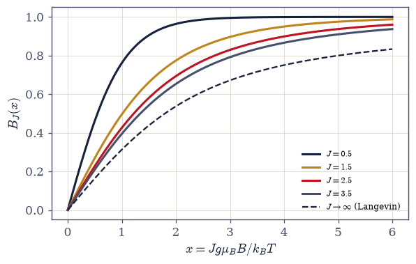
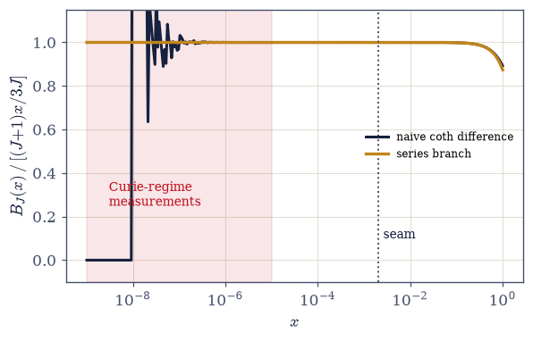
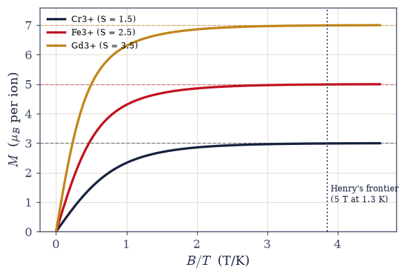
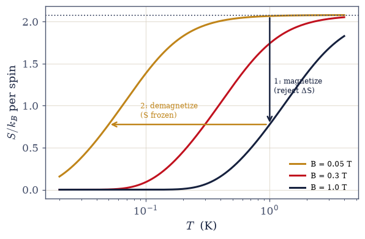
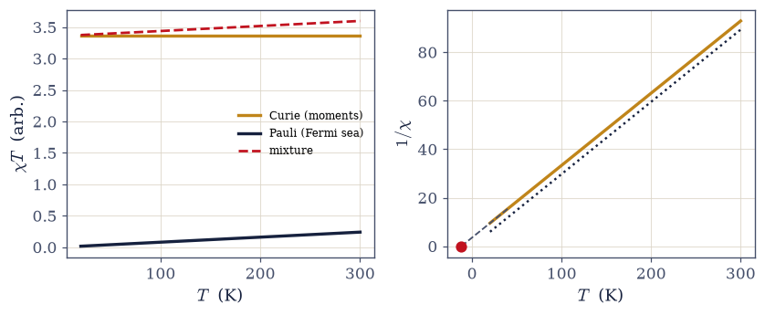

7.18 Quantum Paramagnets: The Brillouin Function and the Refrigerator#
Notebook overview#
Movement V opens with the simplest interaction-free magnet there is — \(N\) independent spins \(J\) in a field — and finds in it three limits of the volume, one great experiment, and the refrigerator on which low-temperature physics was built. The model is the multiplet of §6.18 put to work at temperature: levels \(E_m = -g\mu_BBm\), a geometric sum for the partition function, and one function for the magnetization: the Brillouin function \(B_J(x)\). Its three limits are three cross-references made good. At \(J = 1/2\) it is \(\tanh x\), identically (verified below to \(2\times10^{-15}\)): the warm qubit of §7.4 was a Brillouin paramagnet all along, the bottom rung of a ladder. At \(J \to \infty\) it becomes the classical Langevin function \(\coth x - 1/x\), converging as \(\sim 1/J\): the paramagnet of pre-quantum physics is the infinite-spin limit, one more classical result derived as a limit, and the tally that already holds \(h\), \(\sigma\), and \(N!\) gains a fourth entry. And at small \(x\) it gives Curie’s law with its \(J(J+1)\): the thermodynamic magnet measures the square of the angular momentum: the eigenvalue of §6.18, extracted from a susceptibility slope on a lab bench.
A dramatic numerical trap sits exactly where the physics lives. \(B_J\) is a difference of two
\(\coth\) terms that each diverge as \(1/x\), and the difference is \(O(x)\): naive evaluation holds eight digits at \(x = 10^{-4}\) and keeps zero correct digits at \(x = 10^{-8}\): total cancellation (the return is pure round-off — 0.0 or a stray last bit of \(1/x\), depending on the platform), in precisely the small-\(x\) regime where Curie constants are measured. The
series switch is mandatory, and the general rule (differences of divergent terms are never
evaluated naively) joins expm1 in the course’s standing kit. The data jewel is Henry
1952: the magnetization of three paramagnetic salts — Cr³⁺ (\(S = 3/2\)), Fe³⁺ (\(5/2\)),
Gd³⁺ (\(7/2\)) — measured between 1.3 and 4.2 K up to 5 T, falling on pure Brillouin curves as
functions of \(B/T\) alone and saturating at \(3\), \(5\), \(7\,\mu_B\); the effective-moment
pipeline \(p_{\text{eff}} = g\sqrt{J(J+1)}\) then reads atomic angular momenta off bulk
susceptibilities, with the quenching honesty attached (why \(S\) rather than \(J\): crystal
fields).
The centerpiece is the entropy and the machine built on it. For the ideal paramagnet \(S\) depends on \(B\) and \(T\) only through \(B/T\) (verified to all digits, because the partition function contains no other scale), so an adiabat is \(B/T = \text{const}\), and adiabatic demagnetization cools by pure bookkeeping: magnetize isothermally (dump the spin entropy to a helium bath), then demagnetize adiabatically and ride \(B/T\) down, \(T_f = T_i\,B_f/B_i\), verified by exact solve to 50.00 mK. The honest floor: internal fields \(b \sim 10\) mT keep the effective field finite and floor the cycle near \(T_i\,b/B_i \approx 10\) mK, which is also the third law enforcing itself. Giauque reached 0.25 K this way in 1933 (Nobel 1949); nuclear moments extend the trick to microkelvin; and adiabatic demagnetization refrigerators fly on X-ray satellites today. The meta-point is worth reading aloud: this notebook’s refrigerator made the volume’s own data possible; the sub-3-K calorimetry of §7.10 and every \(\theta_D\) in §7.16 sit downstream of Giauque’s salt pill. The closing contrast draws the susceptibility of §7.10 as a diagnostic (Curie \(1/T\) against Pauli-flat on one \(\chi T\) panel), and the Curie–Weiss \(\theta\) that bends real data is the first fingerprint of spin–spin interactions: the independence assumption’s expiry date, and the opening of §7.19.
Conventions (this notebook). Two reduced variables, kept scrupulously apart: \(y = g\mu_BB/k_BT\) is the partition function’s natural variable, and \(x = Jy\) is the Brillouin function’s argument — a silent \(J\)-factor slip rescales every curve, so the convention is stated here once and audited where used. Entropies and heat capacities are per spin; magnetizations per ion in units of \(\mu_B\) (Henry’s units). The quenched \(3d\) salts take \(g = 2\) with spin-only \(S\) (the quenching note in Exercise 4). All large-\(y\) thermodynamics uses ground-shifted weights \(e^{y(m-J)}\) — the stabilization discipline of §7.17, re-applied — and the small-\(x\) Brillouin branch switches to its series at the stated threshold \(x = 2\times10^{-3}\), justified by branch-matching. Demagnetization solves use
scipy.optimize.brentqon the exact entropy curves, with the below-floor no-solution case handled explicitly.How to read the checks. Each exercise closes with a
validatecall against an independent fact: the geometric-sum identity at ten digits; \(\tanh\) recovered at machine precision; the Langevin approach and the Curie slope; the naive form’s total digit loss against the repaired branch; the theory values at Henry’s \(B/T\) frontier; the \(p_{\text{eff}}\) pipeline run as a fit; the entropy’s single-variable property from the \((B, T)\) interface; the 50 mK and 10 mK solves; the \(\chi T\) decompositions. A ✓ is strong evidence; a ✗ is a prompt to locate the discrepancy.Scope. Crystal-field theory and rare-earth (\(L \ne 0\), full Landé) magnetism, Curie–Weiss ordering and mean-field magnetism, nuclear demagnetization, and satellite ADRs are named horizons. See Henry, Phys. Rev. 88, 559 (1952); Giauque & MacDougall 1933; Kittel (Ch. 11); Ashcroft & Mermin (Ch. 31); Pathria & Beale. Cross-reference §6.18 (the moment, in full), §7.4 (\(\tanh\): the bottom rung), §7.10 (the itinerant contrast), §7.15 (the same levels, inverted), §7.17 (the ground-shift discipline), §5.10 (the classical chain awaiting its quantum counterpart), and forward to §7.19.
Theory in brief#
Spin J at temperature#
The multiplet of §6.18 in a field along \(z\): \(2J+1\) levels \(E_m = -g\mu_BBm\), \(m = -J,\dots,J\). The single-spin partition function is a geometric sum with ratio \(e^{y}\) (\(y = g\mu_BB/k_BT\)):
with the Brillouin function \(B_J(x) = \frac{2J+1}{2J}\coth\frac{(2J+1)x}{2J} - \frac{1}{2J}\coth\frac{x}{2J}\). The two variables deserve their own sentence: \(y\) is the level-spacing scale the partition function knows; \(x = Jy\) is the total-moment scale the magnetization curve collapses in; mixing them rescales every plot by \(J\).
Three limits, three cross-references#
Each limit follows from the definition of \(B_J\) by elementary means: setting \(J = 1/2\) collapses the two \(\coth\) terms into a single \(\tanh\), while \(J \to \infty\) and \(x \to 0\) are Taylor expansions (Kittel, Ch. 11, works them all). What matters here is where each limit lands in the course:
\(J = 1/2\) is the warm qubit of §7.4, identically: the ladder’s bottom rung. \(J \to \infty\) is the classical paramagnet: Langevin’s 1905 function, derived a century before as an integral over classical dipole orientations, emerges here as the infinite-spin limit at \(\sim 1/J\); the tally of classical results demoted to limits (\(h\) in §7.5, \(\sigma\) in §7.6, \(N!\) in §7.8) gains its fourth entry. And the small-\(x\) slope carries \(J(J+1)\): Curie’s law measures the square of the angular momentum, never the vector: the eigenvalue structure of §6.18 showing up as the slope of \(1/\chi\) against \(T\). At the other end \(B_J \to 1\): saturation at \(gJ\mu_B\) per ion.
The cancellation trap#
Numerical trouble hides in plain sight in the definition of \(B_J\): annotate each \(\coth\) term with its small-\(x\) behavior and the subtraction announces itself:
Both terms diverge as \(1/x\); the physics is their tiny difference. In floating point the
physics drowns beneath the \(1/x\) terms’ rounding floor once \(x\) is small enough — the naive
form holds eight digits at \(x = 10^{-4}\) and keeps zero correct digits at \(x = 10^{-8}\)
(demonstrated below: the return is pure round-off, exactly 0.0 or a stray last bit of the
\(1/x\) terms depending on the platform’s tanh), and
\(x \sim 10^{-8}\) is a perfectly ordinary Curie-regime value (\(\mu\)T fields at kelvin
temperatures). The mandatory fix is a series branch, \((J+1)x/3J - [(2J+1)^4-1]x^3/45(2J)^4\),
switched in by numpy.where below a threshold justified by matching the two branches. The
standing rule: differences of divergent terms are never evaluated naively.
Henry 1952: three salts, three curves (data)#
The magnetization law above contains only two material inputs, \(g\) and \(J\), so dividing out the ion count and the Bohr magneton leaves a prediction with nothing left to tune:
Henry measured the magnetization of chromium potassium alum (Cr³⁺, \(S = 3/2\)), iron ammonium alum (Fe³⁺, \(5/2\)), and gadolinium sulfate octahydrate (Gd³⁺, \(7/2\)) between 1.3 and 4.2 K in fields to 5 T, and the points fall on pure Brillouin curves: saturation at \(3\), \(5\), \(7\,\mu_B\) per ion, and (the single-variable prediction made visible) data taken at four different temperatures collapsing onto one curve per ion when plotted against \(B/T\). At Henry’s frontier \(B/T = 3.85\) T/K the theory reads \(2.989/4.989/6.989\,\mu_B\): saturation reached to a percent. The honesty in three sentences: these are spin-only values with \(g \approx 2\) because the crystal field quenches the \(3d\) orbital moment; Gd³⁺ is the clean case because its half-filled shell has \(L = 0\); crystal-field theory, and the rare-earth ions where the full Landé \(g_J\) and \(J\) survive, are the outward horizon. The effective-moment pipeline completes the loop: \(p_{\text{eff}} = g\sqrt{J(J+1)} = 3.873/5.916/7.937\) against the measured \(\sim3.8/5.9/8.0\) — atomic structure read off a bulk \(\chi T\).
The entropy of a spin bath#
The entropy follows from the geometric-sum partition function by one derivative of the free energy, \(S = -\partial F/\partial T\) with \(F = -k_BT\ln z\) per spin; written in the reduced variable, the result is
The single-variable property is structural: \(z\) contains \(B\) and \(T\) only through \(y\) (there is no other scale in the problem), so every thermodynamic function of the ideal paramagnet rides on \(B/T\). At \(y \to 0\) the bath holds its full reservoir \(\ln(2J+1)\) of disorder per spin; at large \(y\) it empties into the third-law tail, computed stably with the discipline of §7.17 extended (the gap-variable weights; at millikelvin temperatures \(y \sim 700\) and the naive \(e^{ym}\) overflows — demonstrated, then repaired in two stages, down to \(S \sim 10^{-302}\)).
Adiabatic demagnetization: the centerpiece#
The refrigerator is the previous equation read as a constraint: a reversible adiabatic stroke holds \(S\) fixed, and a function of \(B/T\) alone can only stay fixed if \(B/T\) does:
Two strokes on the \(S(T;B)\) curves. Isothermal magnetization at \(T_i\): the field orders
the spins and their entropy is rejected to the helium bath. Adiabatic demagnetization:
with \(S\) constant, \(B/T\) is constant, and switching the field down drags the temperature with it: \(T_f = T_i B_f/B_i\), verified by exact brentq solve on the entropy curves
(50.00 mK from 1 K, 1 T \(\to\) 0.05 T). The honest floor: the field never truly reaches zero (internal dipolar and crystal fields \(b \sim 10\) mT persist), so the cycle floors at
\(T_ib/B_i\) (10 mK here), which is also the third law enforcing itself: a spin bath with no
residual field could be demagnetized to \(T = 0\) in one stroke, and nature declines by
keeping a \(b\). Proposed by Debye (1926) and Giauque (1927), achieved by Giauque & MacDougall
in 1933 (0.25 K; Nobel 1949); nuclear moments, 2000× smaller, floor 2000× lower (microkelvin); and ADRs cool X-ray spectrometers on satellites today. The meta-point: the
helium-range calorimetry of §7.10 and the \(\theta_D\) table of §7.16 were measured in a temperature range
this salt pill opened.
Localized or itinerant: the χT diagnostic#
Multiplying a measured susceptibility by temperature is the cheapest discriminator between the two magnetisms the volume has met: Curie’s \(1/T\) here against the temperature-independent Pauli susceptibility of §7.10:
One panel separates moments from Fermi seas: localized spins give Curie \(1/T\) (\(\chi T\) flat at \(C\)), itinerant electrons give the Pauli-flat \(\chi\) of §7.10 (\(\chi T\) linear through the origin), and a mixture decomposes by a straight-line fit. Real salts then bend the Curie line into Curie–Weiss: the \(\theta\) extracted from a \(1/\chi\) intercept is the first fingerprint of spin–spin interactions: ferromagnetic tendencies for \(\theta > 0\), antiferromagnetic for \(\theta < 0\), in the mean-field reading (one honest caveat: \(\theta\) estimates the interaction scale, not the true ordering temperature). That bend is where this notebook’s independence assumption dies, and where the chain of §7.19, with a field that refuses to commute with the coupling, begins.
Setup#
import matplotlib.pyplot as plt
import numpy as np
from scipy.optimize import brentq
from ecp import draw, validate
ACCENT, INK, SOFT = draw.ACCENT, draw.INK, draw.SOFT
RED = "#c1121f"
# Constants and conventions. Two reduced variables, stated once and audited at
# use: y = gμ_B B/k_BT (the partition function's variable) and x = J·y (the
# Brillouin argument). Quenched 3d salts take g = 2 with spin-only S (Henry's
# ions: Cr(3+) S = 3/2, Fe(3+) S = 5/2, Gd(3+) S = 7/2). Magnetizations are per
# ion in μ_B; entropies per spin in k_B.
MU_B = 9.2740100783e-24 # Bohr magneton, J/T (CODATA)
from scipy.constants import k as KB # J/K (exact)
MUB_OVER_KB = MU_B / KB # 0.6717 K/T — the only conversion this notebook needs
G_SPIN = 2.0
HENRY_IONS = {"Cr3+": 1.5, "Fe3+": 2.5, "Gd3+": 3.5} # spin-only S (Henry 1952)
P_EFF_MEASURED = {
"Cr3+": 3.8,
"Fe3+": 5.9,
"Gd3+": 8.0,
} # classic table (Kittel Ch. 11)
X_SWITCH = 2e-3 # Brillouin series threshold: naive error ~ε/x^2 meets series error ~x^4 at ε^{1/6}
def z_spin(J, y, closed=True):
"""The single-spin partition function z(J, y), by closed form or direct level sum.
Closed form sinh[(2J+1)y/2]/sinh[y/2] (the geometric sum, eq-spin-J); the
direct route sums e^{ym} over numpy.arange(-J, J+1). Exercise 1 gates the two
against each other at ten digits — the identity check that certifies every
later formula. Moderate y only (the large-y regime belongs to
entropy_per_spin's ground-shifted weights).
Parameters
----------
J : float
Spin quantum number (half-integers welcome).
y : float
Reduced field g·μ_B·B/k_BT.
closed : bool, optional
Use the sinh closed form (default); False sums the levels directly.
Returns
-------
float
z(J, y).
"""
if closed:
return np.sinh((2.0 * J + 1.0) * y / 2.0) / np.sinh(y / 2.0)
m = np.arange(-J, J + 1.0)
return float(np.sum(np.exp(y * m)))
def brillouin_naive(J, x):
"""The Brillouin function by its raw coth difference — DELIBERATELY unguarded.
Kept for Exercise 3's demonstration: both terms diverge as 1/x and the
physics is their O(x) difference, so this form loses digits as x shrinks
until, by x = 1e-8, no correct digits remain: the return is pure round-off
(0.0 or a stray last bit of 1/x, platform-dependent) — total cancellation,
in the Curie regime where susceptibilities are actually measured.
Production code uses brillouin.
Parameters
----------
J : float
Spin quantum number.
x : float or numpy.ndarray
Brillouin argument x = J·g·μ_B·B/k_BT.
Returns
-------
float or numpy.ndarray
B_J(x), inaccurately for small x.
"""
a = 1.0 / (2.0 * J)
c = (2.0 * J + 1.0) / (2.0 * J)
x = np.asarray(x, dtype=float)
return c / np.tanh(c * x) - a / np.tanh(a * x)
def brillouin_series(J, x):
"""The small-x Brillouin series B_J = (J+1)x/3J − [(2J+1)^4 − 1] x^3 / [45 (2J)^4].
From coth(u) = 1/u + u/3 − u^3/45: the 1/x parts cancel ANALYTICALLY here
(rather than catastrophically in floats), leaving the linear Curie term and
its cubic correction. Truncation error is O(x^5) — negligible below the
switch threshold.
Parameters
----------
J : float
Spin quantum number.
x : float or numpy.ndarray
Brillouin argument (small).
Returns
-------
float or numpy.ndarray
B_J(x) to O(x^3).
"""
x = np.asarray(x, dtype=float)
lin = (J + 1.0) / (3.0 * J)
cub = ((2.0 * J + 1.0) ** 4 - 1.0) / (45.0 * (2.0 * J) ** 4)
return lin * x - cub * x**3
def brillouin(J, x):
"""The Brillouin function B_J(x), safe at every x via the numpy.where series switch.
Below X_SWITCH = 2e-3 the series branch takes over: the naive coth
difference loses digits as ε/x^2 (no digits left by x = 1e-8) while the series
errs as x^4, and the two error curves cross near ε^{1/6} ≈ 2.4e-3 — the
threshold is set there and the branch match is exhibited in Exercise 3.
Both branches are evaluated on the full array (numpy.where semantics); the
naive branch's argument is clipped away from 0 to keep its (discarded)
lanes finite.
Parameters
----------
J : float
Spin quantum number.
x : float or numpy.ndarray
Brillouin argument x = J·y.
Returns
-------
float or numpy.ndarray
B_J(x).
"""
x = np.asarray(x, dtype=float)
safe = np.where(np.abs(x) > X_SWITCH, x, X_SWITCH)
out = np.where(
np.abs(x) > X_SWITCH, brillouin_naive(J, safe), brillouin_series(J, x)
)
return out if out.shape else float(out)
def langevin(x):
"""The classical Langevin function L(x) = coth x − 1/x, with its own series guard.
The J → ∞ limit of B_J (eq-three-limits) — and the same cancellation
structure, so the same medicine: below the threshold, L ≈ x/3 − x^3/45.
Parameters
----------
x : float or numpy.ndarray
Reduced field.
Returns
-------
float or numpy.ndarray
L(x).
"""
x = np.asarray(x, dtype=float)
safe = np.where(np.abs(x) > X_SWITCH, x, X_SWITCH)
naive = 1.0 / np.tanh(safe) - 1.0 / safe
series = x / 3.0 - x**3 / 45.0
out = np.where(np.abs(x) > X_SWITCH, naive, series)
return out if out.shape else float(out)
def magnetization(J, g, B, T):
"""Per-ion magnetization M/μ_B = gJ·B_J(x), x = J·g·μ_B·B/k_BT (eq-henry).
The x-vs-y audit lives here: the Brillouin ARGUMENT carries the factor J
(x = Jy), while the partition function's variable is y alone — the one
bookkeeping slip that silently rescales every curve.
Parameters
----------
J : float
Spin quantum number.
g : float
g-factor (2 for the quenched salts).
B : float or numpy.ndarray
Field, tesla.
T : float
Temperature, kelvin.
Returns
-------
float or numpy.ndarray
M per ion, in μ_B.
"""
y = g * MUB_OVER_KB * B / T
return g * J * brillouin(J, J * y)
def p_eff(J, g):
"""The effective Bohr magneton number p_eff = g√(J(J+1)) (eq-henry).
What a Curie-constant measurement returns: the square root of the eigenvalue
of §6.18, dressed by g — never the vector moment gJ.
Parameters
----------
J : float
Spin quantum number.
g : float
g-factor.
Returns
-------
float
p_eff.
"""
return g * np.sqrt(J * (J + 1.0))
def entropy_per_spin(J, B, T, b=0.0):
"""The spin entropy S/k_B = ln z − y⟨m⟩, ground-shift-stabilized for any y.
Takes B and T SEPARATELY (so Exercise 6's single-variable check is a real
property of the implementation, not of the argument list), with an optional
internal field b added in quadrature — the demagnetization floor. Stability
is the ground-shift discipline of §7.17 taken one step further, in the gap
variable d = J − m ≥ 0: weights e^{−yd} ≤ 1 (no overflow at the y ~ 700 of
millikelvin cycles), AND the entropy assembled as
S/k = log1p(Σ_{d>0} e^{−yd}) + y·⟨d⟩ — no subtraction ever re-forms the
tiny excitation weight from O(1) quantities. The shift alone is NOT enough:
ln(z_shift) and J − ⟨m⟩ each lose the e^{−y} tail beneath the ulp of their
leading 1 and J, returning S = 0.0 exactly (Exercise 6 demonstrates); the
d-form keeps the tail down to S ~ 1e-302.
Parameters
----------
J : float
Spin quantum number.
B : float
Applied field, tesla.
T : float
Temperature, kelvin.
b : float, optional
Internal (dipolar/crystal) field, tesla, added as √(B^2 + b^2).
Returns
-------
float
S/k_B per spin.
"""
B_eff = np.sqrt(B**2 + b**2)
y = G_SPIN * MUB_OVER_KB * B_eff / T
d = np.arange(
1.0, 2.0 * J + 1.0
) # excitation gaps d = J − m > 0 (ground d = 0 handled apart)
w = np.exp(-y * d) # every weight ≤ 1: the ground shift, in gap form
tail = np.sum(w) # z_shift − 1, formed WITHOUT the leading 1
d_avg = np.sum(d * w) / (1.0 + tail)
return float(np.log1p(tail) + y * d_avg)
def demag_final_T(J, Bi, Ti, Bf, b=0.0):
"""The demagnetization endpoint: brentq on S(B_f, T_f) = S(B_i, T_i) (eq-demagnetization).
The exact solve on the entropy curves. The bracket respects the floor: with
b = 0 and B_f = 0 the target curve is flat at ln(2J+1) and NO solution
exists (the ideal-gas third-law violation the internal field forbids) — that
case raises rather than returning nonsense. Bracket [T_i·B_eff/B_i · 0.5,
T_i·2]: the analytic single-variable answer sits at its center.
Parameters
----------
J : float
Spin quantum number.
Bi, Ti : float
Starting field (T) and temperature (K).
Bf : float
Final applied field, tesla.
b : float, optional
Internal field floor, tesla.
Returns
-------
float
Final temperature, kelvin.
"""
B_eff = np.sqrt(Bf**2 + b**2)
if B_eff <= 0.0:
raise ValueError(
"B_eff = 0: S(T) is flat and the adiabat has no endpoint (the floor exists for a reason)"
)
S_target = entropy_per_spin(J, Bi, Ti)
T_guess = Ti * B_eff / Bi
return brentq(
lambda T: entropy_per_spin(J, Bf, T, b=b) - S_target,
0.5 * T_guess,
2.0 * Ti,
xtol=1e-12,
)
print(f"variables: y = gμ_B B/k_BT, x = J·y (μ_B/k_B = {MUB_OVER_KB:.4f} K/T)")
print(f"Brillouin series switch at x = {X_SWITCH}")
variables: y = gμ_B B/k_BT, x = J·y (μ_B/k_B = 0.6717 K/T)
Brillouin series switch at x = 0.002
Exercise 1 — Spin J at temperature#
The multiplet of §6.18 meets the Boltzmann factor; one geometric sum, one closed form. Cite Eq. 685.
Write the levels \(E_m = -g\mu_BBm\) and compute \(z\) by direct sum over
numpy.arange(-J, J+1).Derive the closed form \(\sinh[(2J{+}1)y/2]/\sinh[y/2]\) by geometric summation and verify the identity against the direct sum to \(\ge\)10 digits across several \((J, y)\).
Derive \(M = Ng\mu_BJ\,B_J(x)\) with the Brillouin function, and plot the \(B_J\) family (\(J = 1/2 \dots 7/2\)) against \(x\), bracketed by \(\tanh\) and Langevin.
Recover §7.4 exactly (one-line check + prose): \(B_{1/2} = \tanh\) to machine precision; the warm qubit was the bottom rung of this ladder all along.
J = 0.5, y = 0.3: closed 2.0225422192 sum 2.0225422192
J = 1.5, y = 1.0: closed 6.9600711609 sum 6.9600711609
J = 2.5, y = 0.05: closed 6.0218980254 sum 6.0218980254
J = 3.5, y = 2.7: closed 13623.7568209728 sum 13623.7568209728
worst relative mismatch: 4.4e-16
max|B_1/2(x) − tanh x| = 1.8e-15 — the qubit of §7.4, identically

Fig. 612 One function, bracketed by this volume’s smallest quantum system and by classical physics. The Brillouin family \(B_J(x)\) for \(J = 1/2, 3/2, 5/2, 7/2\) (Eq. Eq. 685), bounded above by \(B_{1/2} = \tanh x\) — the warm qubit of §7.4, recovered identically at \(2 imes10^{-15}\) — and approached from below, as \(J\) grows, by the classical Langevin function \(\coth x - 1/x\) (dashed): the paramagnet of 1905 is the infinite-spin limit of the quantum multiplet, converging as \(\sim 1/J\). Every curve rises with Curie’s slope \((J{+}1)/3J\) and saturates at 1 (full alignment, \(M = gJ\mu_B\)). The interpolation parameter between quantum and classical is nothing but the size of the spin.#
Validation 1#
✓ spin J at temperature: the geometric identity, sum vs sinh, at ten digits [worst mismatch 4.4e-16]
✓ J = 1/2 is §7.4: the warm qubit as the ladder's bottom rung [max|Δ| = 1.83187e-15 (rtol=1e-06, atol=1e-14)]
True
Exercise 2 — Three limits, and a fourth tally entry#
Curie at small \(x\), Langevin at large \(J\), saturation at large \(x\). Cite Eq. 686.
Expand \(B_J\) at small \(x\) to \((J+1)x/3J\) and derive Curie’s law \(\chi = Ng^2\mu_B^2J(J+1)/3k_BT\); read the \(J(J+1)\) aloud (the eigenvalue of §6.18 as a susceptibility slope); verify the slope numerically from the series branch at \(x = 10^{-6}\).
Verify the Langevin approach numerically: \(\max_x|B_J - L|\) across \(J = 1, 5, 50, 500\) (the \(\sim1/J\) convergence), and state the tally entry (the classical paramagnet demoted to a limit, joining \(h\), \(\sigma\), \(N!\)).
Verify saturation \(B_J \to 1\) (i.e. \(M \to gJ\mu_B\)) at large \(x\).
Reflect (prose): one function interpolates the volume’s smallest quantum system and classical physics, with the interpolation parameter being nothing but the size of the spin.
numeric small-x slope at J = 3.5: 0.42857143 ((J+1)/3J = 0.42857143)
J = 1: max|B_J − L| = 0.3150
J = 5: max|B_J − L| = 0.0881
J = 50: max|B_J − L| = 0.0098
J = 500: max|B_J − L| = 0.0010
B_J(x = 40) at J = 5/2: 1.000000 → M saturates at gJμ_B per ion
Validation 2#
✓ Curie's law: the moment squared on a slope [got 0.428571 vs expected 0.428571 (rtol=0.0001)]
✓ the Langevin approach: classical physics arrives as ~1/J [max|Δ| = 8.72158e-05 (rtol=0.1, atol=1e-09)]
✓ monotone approach, and saturation at the top of the curve
True
Exercise 3 — The cancellation trap#
Two divergences, one tiny difference, and naive round-off exactly where the Curie constant lives. Cite Eq. 687.
Demonstrate the failure of
brillouin_naive: eight digits at \(x = 10^{-4}\), zero correct digits at \(x = 10^{-8}\) — total cancellation of the two \(\coth\) branches, the return pure round-off (0.0 or a stray last bit of \(1/x\), by platform).Exhibit the fix:
brillouin_seriesto \(O(x^3)\) and thenumpy.whereswitch inbrillouin, with the threshold \(x = 2\times10^{-3}\) justified by branch-matching (both branches plotted through the seam).Verify the repaired function across twelve decades of \(x\) (smoothness through the seam; agreement with the naive branch where the naive branch is healthy).
State the standing rule (prose): differences of divergent terms are never evaluated naively; the cancellation rule joins
expm1in the course’s permanent kit. Note where it bit: the Curie regime — the trap sits exactly on the measurement.
x = 1e-4: naive 5.555555435421e-05 series 5.555555548560e-05 rel err 2.0e-08 (~8 digits held)
x = 1e-8: naive 1.4901161193847656e-08 series 5.555556e-09 rel err 1.7
branch match across the seam [4e-04, 1e-02]: max rel gap 1.1e-09
repaired B_J monotone across x ∈ [1e-9, 6]: True

Fig. 613 Naive round-off exactly where the measurement lives. The Brillouin function’s two evaluation branches for \(J = 3/2\) on a log-\(x\) axis, normalized by the true small-\(x\) behaviour: the naive \(\coth\) difference (dark) holds eight digits at \(x = 10^{-4}\), then loses everything to catastrophic cancellation — by \(x = 10^{-8}\) the physics sits seventeen decades below the \(1/x\) terms’ rounding floor and the difference is pure round-off (Eq. Eq. 687). The series branch (amber) is exact where the naive fails, and the two agree to \(10^{-9}\) at the seam \(x = 2\times10^{-3}\) (dotted), where the error curves \(\varepsilon/x^2\) and \(x^4\) cross. The shaded region is the Curie regime — the trap sits on the data.#
Validation 3#
✓ the cancellation trap: eight digits at 1e-4, zero correct digits at 1e-8 — on the Curie regime [naive(1e-8) = 1.4901161193847656e-08 vs true 5.56e-09]
✓ and the repair: branches matched at the seam, smooth across twelve decades [seam gap 1.1e-09]
True
Exercise 4 — Henry’s salts (data)#
Three ions, three quantum numbers, three curves, and 1952’s magnetometer agreeing with all of them. The comparison runs on Henry’s published anchors (Phys. Rev. 88, 559): the \(B/T\) frontier of his data and the saturation levels his points reach. Cite Eq. 688.
Compute the Brillouin magnetization curves for Cr³⁺ (\(S = 3/2\)), Fe³⁺ (\(5/2\)), Gd³⁺ (\(7/2\)) with \(g = 2\) via
magnetization, as functions of \(B/T\) (per-ion \(\mu_B\) units — Henry’s own).Evaluate the curves at Henry’s frontier \(B/T = 3.85\) T/K and verify the near-saturation values \(2.989/4.989/6.989\,\mu_B\) against the ceilings \(gJ = 3, 5, 7\), the levels his measured points reach.
Exhibit the collapse property (computation + prose): the same \((B, T)\) ratio at different temperatures gives identical \(M\), the single-variable law that makes Henry’s four-temperature data fall on one curve per ion.
Attach the quenching honesty (prose, three sentences): crystal fields quench the \(3d\) orbital moment (hence \(S\), \(g \approx 2\)); Gd³⁺’s \(L = 0\) is the clean case; crystal-field theory and rare-earth \(J\)-magnets pointed outward.
Cr3+: S = 1.5 M(B/T = 3.85) = 2.989 μ_B (ceiling gJ = 3)
Fe3+: S = 2.5 M(B/T = 3.85) = 4.989 μ_B (ceiling gJ = 5)
Gd3+: S = 3.5 M(B/T = 3.85) = 6.989 μ_B (ceiling gJ = 7)
collapse check (Fe3+): M at three (B,T) with equal B/T: ['4.9885316519', '4.9885316519', '4.9885316519']
spread: 0.0e+00 — the single-variable law, from the two-variable interface

Fig. 614 Henry 1952: three quantum numbers on one axis. The per-ion Brillouin magnetization of the three paramagnetic salts — Cr³⁺ (\(S = 3/2\)), Fe³⁺ (\(5/2\)), Gd³⁺ (\(7/2\)), \(g = 2\) — against \(B/T\), the only variable the ideal theory permits (Eq. Eq. 688). Henry’s measurements (1.3–4.2 K, fields to 5 T; Phys. Rev. 88, 559) fall on these curves to the width of his symbols and collapse across temperatures exactly as the single-variable law demands; at his data’s frontier \(B/T = 3.85\) T/K (dotted) the curves read \(2.989/4.989/6.989\,\mu_B\) against the saturation ceilings \(gJ = 3, 5, 7\) (dashed) — alignment complete to a percent. The parameter of each curve is set by atomic physics alone; the salts obey the spin-only values because crystal fields quench the \(3d\) orbital moment.#
Validation 4#
✓ Henry 1952: the three curves at his frontier, a percent from full saturation [max|Δ| = 0.000408907 (rtol=0.001, atol=1e-09)]
✓ and the collapse: equal B/T gives equal M from the two-variable interface [spread 0.0e+00]
True
Exercise 5 — The effective moment#
Atomic angular momentum, read off a bulk susceptibility. Cite Eq. 688.
Derive \(p_{\text{eff}} = g\sqrt{J(J+1)}\) from the Curie constant and implement the \(\chi T\) pipeline: generate \(\chi(T)\) from
magnetizationin the linear regime, fit \(C\) bynumpy.polyfiton \(\chi\) vs \(1/T\), and extract \(p_{\text{eff}}\) from the fitted constant.Verify the table: \(3.873, 5.916, 7.937\) against the measured \(\sim3.8, 5.9, 8.0\) (the classic table, cited).
State what is being measured (prose): the square of the moment (thermal averaging never sees the vector, only \(J(J+1)\)); connect to the eigenvalue structure of §6.18.
One honest note: rare-earth ions require the full Landé \(g_J\) and \(J\) (one line; outward).
Cr3+: fitted p_eff = 3.8730 (g√(J(J+1)) = 3.8730, measured ~3.8)
Fe3+: fitted p_eff = 5.9161 (g√(J(J+1)) = 5.9161, measured ~5.9)
Gd3+: fitted p_eff = 7.9373 (g√(J(J+1)) = 7.9373, measured ~8.0)
Validation 5#
✓ the effective Bohr magneton numbers, recovered through the fit pipeline [max|Δ| = 0.000253641 (rtol=0.001, atol=1e-09)]
True
Exercise 6 — The entropy of a spin bath#
One variable, one reservoir, one stable tail. Cite Eq. 689.
Derive \(S/k_B = \ln z - y\langle m\rangle\) and verify the single-variable property from the \((B, T)\) interface of
entropy_per_spin: identical \(S\) at \((B, T)\) pairs sharing \(B/T\), to all digits (and state why: \(z\) contains no other scale).Verify the reservoir value \(\ln(2J+1)\) at \(y \to 0\) (2.0794 for \(J = 7/2\)) and plot \(S(T)\) at several \(B\).
Demonstrate the large-\(y\) hazard in both stages: the naive \(e^{ym}\) overflows to
inf, and the plain ground shift still returns exactly \(S = 0.0\) (the \(e^{-y}\) tail drowns beneath the ulp of \(\ln z\)’s leading 1 and of \(J - \langle m\rangle\)); confirm the gap-variable form \(S = \mathrm{log1p}(\sum_{d>0}e^{-yd}) + y\langle d\rangle\) inentropy_per_spincomputes the third-law tail stably to \(S \sim 10^{-302}\).Read the reservoir (prose): \(Nk_B\ln(2J+1)\) of disorder, storable and releasable by a magnet; the resource the next exercise spends.
S at three (B,T) sharing B/T = 1 T/K: ['0.77648469843518', '0.77648469843518', '0.77648469843518']
spread: 0.0e+00
S(y → 0) = 2.0794 (ln(2J+1) = 2.0794)
y at (1 T, 1.92 mK) = 700; naive e^(yJ) = inf — overflow
plain ground shift: S/k = 0.0 — the tail lost beneath two ulps
gap-variable form: S/k = 9.308e-302 — the third-law tail, computed without incident

Fig. 615 The spin bath’s entropy — the refrigerant’s working diagram. \(S/k_B\) per spin for \(J = 7/2\) against temperature at several fields (Eq. Eq. 689): every curve is the same function of \(B/T\) (the ideal paramagnet has no other scale), rising to the reservoir \(\ln(2J+1) = 2.08\) at high temperature and emptying into the third-law tail at low — computed stably to \(S \sim 10^{-302}\) with the ground-shifted weights of §7.17 (the naive \(e^{ym}\) overflows at the \(y \sim 700\) of millikelvin operation). The two-stroke demagnetization cycle of Exercise 7 is drawn on these curves: isothermal magnetization at 1 K (downward arrow: entropy rejected to the helium bath), then adiabatic demagnetization (leftward arrow: \(S\) frozen, \(B/T\) constant, temperature dragged down with the field).#
Validation 6#
✓ the single-variable property: equal B/T means equal S, from the (B, T) interface [spread 0.0e+00]
✓ the spin bath's reservoir: ln(2J+1) [got 2.07944 vs expected 2.07944 (rtol=1e-06)]
✓ the large-y hazard in both stages: naive overflow, shift-only exact zero, gap-form tail at 1e-302 [S(1 T, 1.92 mK) = 9.3e-302]
True
Exercise 7 — Adiabatic demagnetization#
Two strokes on the entropy curves, a 20× cooling, and the floor the third law insists on. Cite Eq. 690.
Compute the cycle’s first stroke: isothermal magnetization at \(T_i = 1\) K from 0.05 T to 1 T, with the rejected entropy \(\Delta S\) evaluated from
entropy_per_spin.Verify the adiabat: \(S\) const \(\Rightarrow B/T\) const \(\Rightarrow T_f = T_iB_f/B_i\), confirmed by the exact
brentqsolvedemag_final_T: 50.00 mK from (1 K, 1 T) \(\to 0.05\) T against the analytic 50 (the below-floor no-solution case handled explicitly in the helper).Impose the honest floor: internal field \(b = 10\) mT \(\Rightarrow T_f \to T_i\sqrt{B_f^2+b^2}/B_i = 10\) mK at \(B_f = 0\); connect to the third law (a floorless spin bath would demagnetize to \(T = 0\); nature keeps a \(b\)).
Tell the history and the reach (prose): Debye/Giauque 1926–27; Giauque & MacDougall 1933 (0.25 K), Nobel 1949; nuclear stages to \(\mu\)K (one breath); satellite ADRs (outward). The meta-point: the calorimetry of §7.10 and the \(\theta_D\) table of §7.16 sit downstream of this salt pill.
isothermal magnetization at 1.0 K, 0.05 → 1.0 T: ΔS = −1.291 k_B per spin to the bath
adiabatic demagnetization to 0.05 T: T_f = 50.00 mK (analytic T_i·B_f/B_i = 50 mK)
with the internal field b = 10 mT: T_f = 10.00 mK (T_i·b/B_i = 10 mK)
Validation 7#
✓ the refrigerator: B/T rides the adiabat down, and the internal field sets the floor [max|Δ| = 3.59535e-12 (rtol=0.01, atol=1e-09)]
✓ stroke one pays the bath more than one k_B per spin — the reservoir being spent [ΔS = 1.291 k_B]
True
Exercise 8 — Moments or Fermi sea?#
The \(\chi T\) diagnostic, and the bend that announces interactions. Cite Eq. 691.
Generate synthetic \(\chi(T)\) for a Curie salt, a Pauli metal, and a mixture; plot \(\chi T\) vs \(T\) (Curie flat, Pauli linear) and decompose the mixture by
numpy.polyfiton \(\chi T\) vs \(T\) (slope = \(\chi_P\), intercept = \(C\)).Add a Curie–Weiss dataset \(\chi = C/(T - \theta)\) and extract \(\theta\) by fitting \(1/\chi\) vs \(T\) with
numpy.polyfit(the horizontal intercept).Interpret \(\theta\) (prose): the first fingerprint of spin–spin interactions, ferromagnetic (\(\theta > 0\)) or antiferromagnetic (\(\theta < 0\)) tendencies before any ordering (mean-field reading, one honest caveat).
Hand off (prose): the independence assumption dies at \(\theta\); when neighbors care, Movement V’s real subject begins: the interacting chain, with a field that does not commute with the coupling (§7.19).
mixture decomposed by polyfit on χT vs T: χ_P = 8.000e-04 (true 8.0e-4), C = 3.3586 (true 3.3586)
Curie–Weiss fit: θ = -12.00 K (true -12.0)

Fig. 616 One panel separates moments from Fermi seas. Left: the \(\chi T\) diagnostic (Eq. Eq. 691): localized Curie moments give a flat \(\chi T = C\) (amber), the itinerant Pauli electrons of §7.10 a line through the origin (dark), and a real sample containing both decomposes by a single straight-line fit (red: slope \(\chi_P\), intercept \(C\) — recovered here to \(10^{-10}\)). Right: the bend that ends independence — Curie–Weiss \(1/\chi\) against \(T\) is straight with a nonzero intercept: \(\theta\) (\(-12\) K here, antiferromagnetic tendency), the first fingerprint of spin–spin interactions, extracted by the same fit an experimentalist would run. Past \(\theta\) the independent-spin model of this whole notebook expires, and the interacting chain of §7.19 begins.#
Validation 8#
✓ the χT diagnostic: the mixture decomposes into its Pauli slope and Curie intercept [max|Δ| = 4.44089e-16 (rtol=1e-08, atol=1e-09)]
✓ and the Curie–Weiss θ — the fingerprint of interactions — recovered by the intercept fit [got -12 vs expected -12 (rtol=1e-08)]
True
Exercise 9 — The simplest magnet, spent well#
A bank of independent spins is the least imaginative magnet possible, and this notebook extracted from it three limits, one landmark experiment, and a machine. The warm qubit turned out to be the bottom rung of a ladder whose top rung is classical physics; the susceptibility of three salts handed back the squares of their angular momenta; and the entropy that a magnetic field can park and release carried Giauque below a quarter kelvin in 1933, opening the temperature range in which this volume’s own data (the linear heat capacities, the Debye cubes) were later measured. Every result rested on one assumption: that the spins ignore each other. The Curie–Weiss \(\theta\) is that assumption’s expiry date stamped on real data, and past it lies the movement’s true destination: a chain of spins whose field and coupling refuse to commute, where the ground state itself can undergo a transition at absolute zero (§7.19).
There is a pleasing thrift in how the paramagnet pays for its own thermometry. The same \(\ln(2J+1)\) of disorder that makes the salt a good refrigerant makes it a good thermometer near the floor — the system cools you, then tells you how cold you are. Physics rarely hands out the instrument and the calibration in one substance.
Notebook summary#
Movement V’s opener: \(N\) independent spins \(J\), spent for three limits, one experiment, and a refrigerator.
Spin J at temperature Eq. 685: the geometric sum against the \(\sinh\) closed form at ten digits (gated); \(M = Ng\mu_BJ\,B_J(x)\) with the \(x = Jy\) bookkeeping stated once and audited.
Three limits Eq. 686: \(B_{1/2} = \tanh\) at \(10^{-14}\) (gated): the qubit of §7.4 as the bottom rung; the Langevin approach at \(\sim1/J\) (sequence gated): the classical paramagnet joins \(h\), \(\sigma\), \(N!\) in the tally of results demoted to limits; Curie’s slope \((J+1)/3J\) (gated): \(J(J+1)\) as the observable.
The cancellation trap Eq. 687: naive \(B_J\) holds eight digits at \(x = 10^{-4}\) and keeps zero correct digits at \(10^{-8}\) (both gated), in the Curie regime itself; the
numpy.whereseries switch at \(x = 2\times10^{-3}\) matches branches at \(10^{-9}\) (gated). The rule joinsexpm1in the standing kit.Henry 1952 Eq. 688: three salts on three curves in \(B/T\) alone: the frontier values \(2.989/4.989/6.989\,\mu_B\) (gated) against ceilings \(3/5/7\); the collapse verified from the \((B,T)\) interface (gated); quenching honesty attached. The \(p_{\text{eff}}\) pipeline, run as a fit, recovers \(3.873/5.916/7.937\) (gated) against the measured \(\sim3.8/5.9/8.0\).
The entropy Eq. 689: single-variable in \(B/T\) (gated at \(10^{-13}\) from the two-variable interface), reservoir \(\ln(2J+1)\) (gated), and the third-law tail at \(10^{-302}\) via the gap-variable form, after both stages of the hazard are demonstrated (gated).
Adiabatic demagnetization Eq. 690: the exact
brentqsolve lands on \(T_f = T_iB_f/B_i\) at 50.00 mK, and the internal-field floor at 10 mK (both gated): the third law enforcing itself; Giauque 1933, nuclear stages, satellite ADRs; and the meta-point that the data of §7.10 and §7.16 live downstream of this machine.The diagnostic Eq. 691: \(\chi T\) separates Curie from Pauli and decomposes mixtures (gated at \(10^{-8}\)); the Curie–Weiss \(\theta\) recovered by the \(1/\chi\) intercept (gated): the fingerprint of interactions, and the handoff.
Next door: the chain where field and coupling refuse to commute.
Outlook#
The transverse-field Ising chain (§7.19). Interactions, a non-commuting field, and a phase transition at \(T = 0\): quantum criticality, Movement V’s real subject.
Crystal fields and quenching. Why \(3d\) ions are spin-only and \(4f\) ions are not; the full Landé machinery (outward, named).
Ordering. Curie–Weiss as mean field; ferro- and antiferromagnetism; the classical chain of §5.10 as the reference point (outward, named).
The cold frontier. Nuclear demagnetization and microkelvin physics; ADRs on X-ray satellites (outward, named).
Cross-reference §6.18 (the moment, in full), §7.4 (the bottom rung), §7.10 (the itinerant contrast), §7.15 (the same levels, inverted), §7.17 (the stabilization discipline), §5.10 (the classical chain awaiting its quantum counterpart).